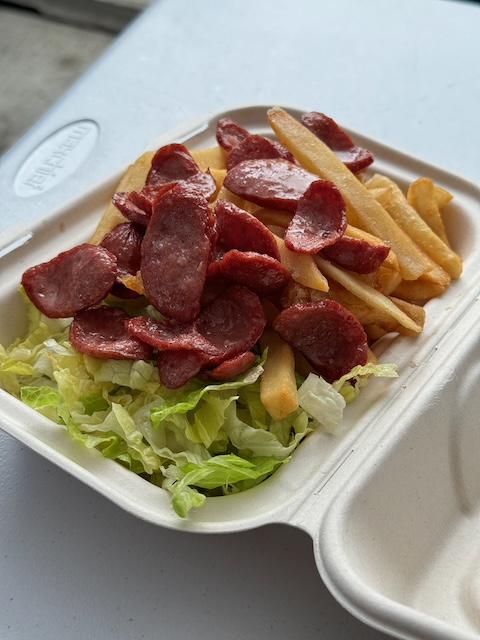
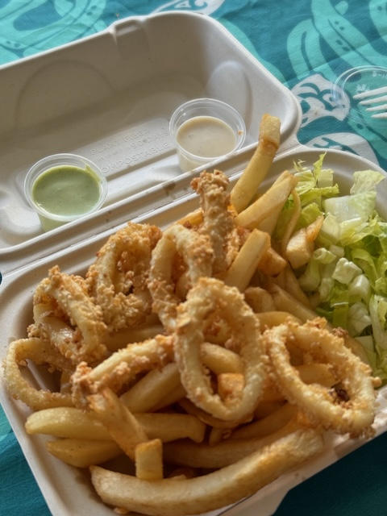
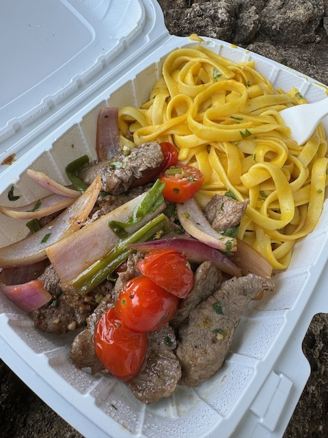
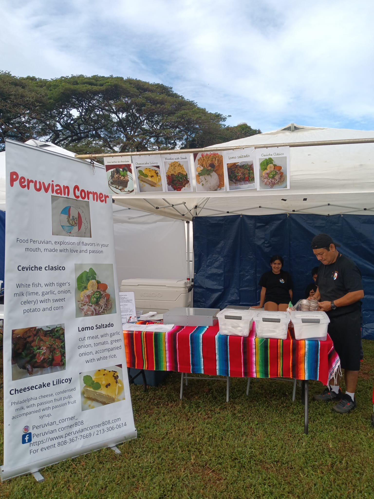

Waialua, North Shore · Hawaii
Cocina Peruana
Criolla
Sabores únicos Peruanos, hechos con pasión y amor
@ Farmers Markets & Backyard Oasis
Deslizá
Waialua, North Shore · Hawaii
Sabores únicos Peruanos, hechos con pasión y amor
@ Farmers Markets & Backyard Oasis
Peruvian Corner nació en los Farmers Markets de Oahu, donde Chef Miguel y Fanny Torres comenzaron a compartir los sabores más auténticos de la cocina criolla peruana con la comunidad hawaiana.
Hoy, desde nuestro Backyard Oasis en Waialua, seguimos cocinando cada plato con los mismos ingredientes frescos, la misma pasión y el mismo amor de siempre. Las manos que hacen y sirven estos platos son las mismas que pintaron las mesas y pusieron las flores.
Ceviche de mahi fresco, anticuchos a la parrilla, lomo saltado con influencia chifa, tiradito nikkei… cada bocado cuenta una historia de tres culturas: peruana, japonesa y china, unidas en el paraíso del Pacífico.





Empezamos en los mercados de agricultores de Oahu y seguimos recorriendo la isla. Nos encontrás en:
Seguí nuestro Instagram para saber dónde estaremos cada semana.
@peruviancornerhawaii
Llamá unos minutos antes de venir al Backyard Oasis, o pedí directo online. También tomamos pedidos por WhatsApp.
📞 (808) 888-0234 · WhatsApp · Teléfono · Texto